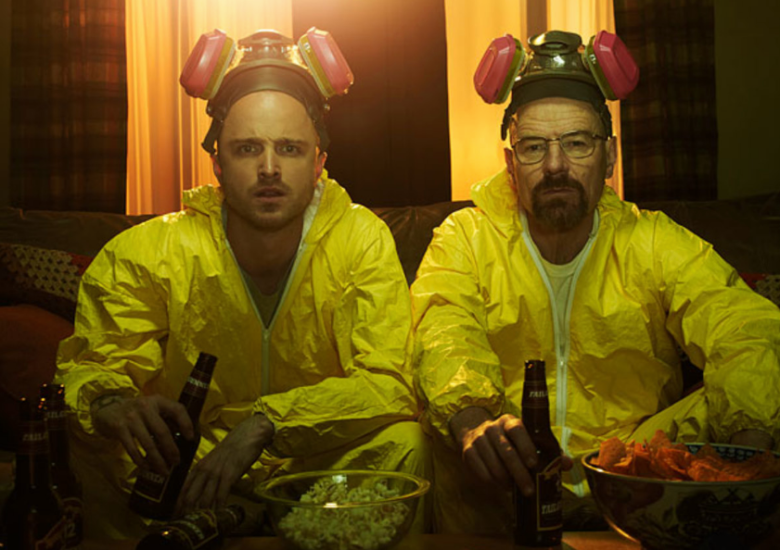
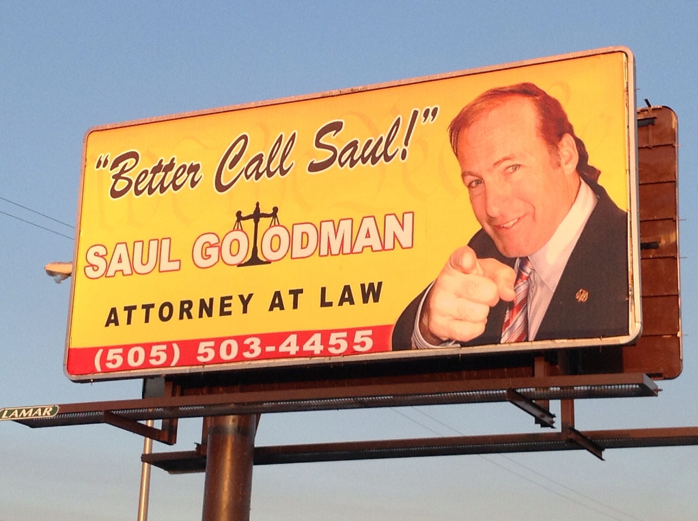

This is the best show ever!!!
The show starts outs with two complete opposite characters, Jesse Pinkman, and Walter White.
Walter White has been diagnosed with cancer! So he finds Jesse Pinkman, a meth cook, and they partner up in the drug business.
Walt has a DEA Agent brother in law, a problem that will trouble the dynamic duo in times to come.
To help them through their troubles, they recruit Saul Goodman, a criminal defense lawyer.

Here is a great scene of Hank almost dying!
The Cousins vs Hank
No. Too easy.
This is what one of the cousins says right before attempting to kill Hank and goes to get an axe from his car. Hank is able to place a bullet in his gun and shot the cousin right in his head.
A great quote from walter white is when he says to a fellow drug lord, "Say My Name."